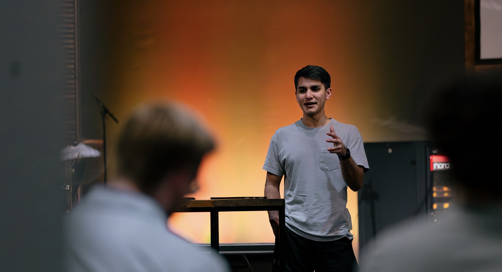
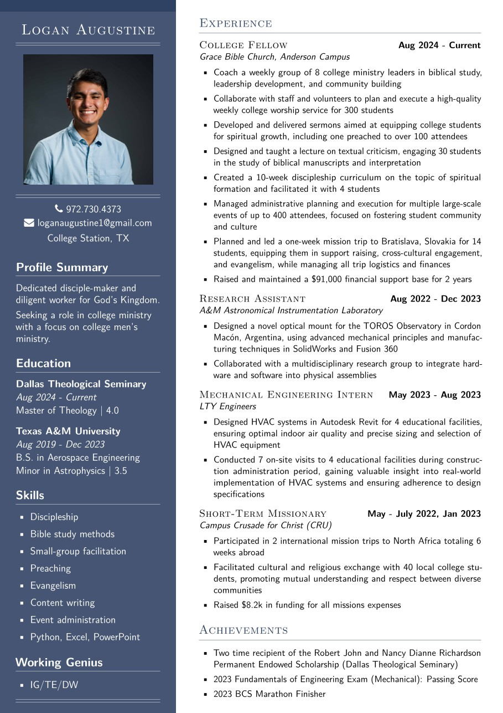

Ministry Objective
After completing the Fellows Program, I hope to pursue a ministry leadership role that is both pastorally grounded and entrepreneurially minded. I am drawn to work that centers on discipleship and teaching while also involving the creativity and initiative required to build meaningful ministry environments. My own life was significantly shaped during my college years, and that experience has given me a deep desire to invest in college students as they navigate questions of faith, formation, and calling.
In this kind of role, I hope to teach Scripture with clarity while cultivating environments for intentional discipleship. My goal is not only to help people grow in their understanding of God's Word but to see them become equipped to disciple others in turn, with an eye toward long-term spiritual formation.
I believe my giftings in teaching, leadership, and relational investment have prepared me well for this direction. I am committed to remaining a learner, both in Scripture and in practice, so that I can lead with humility and effectiveness. Ultimately, I want to guide people toward spiritual maturity and raise up leaders who will carry the work of discipleship forward.
My aim is simple: know Christ, make Him known, and help others do the same.
Ministry Philosophy
As a follower of Christ, I believe we are called to three things: Exaultation, Edifictation, and Evangelism
[Under Construction!!!]
Ministry Experience
Continue to the next page to hear more about my experience in discipleship, teaching, and missions. Also, click the following link to view my resume.
View My Resume
